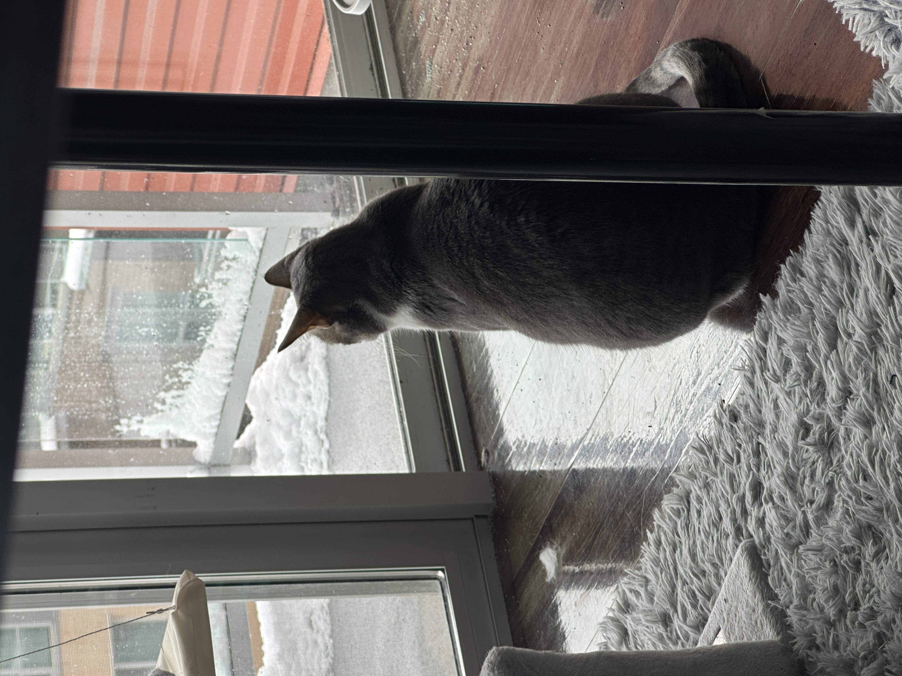

About Kuikui
Interested about Kuikui?
Kuikui is a tabby with grey color as his main color. She weights about 12lbs, and we adopted her from a local pet store. Kuikui is very quite most of the time, and she is very scared of strangers. She welcomes us home when we get home everytime, and she likes to play with people. Kuikui likes to explore, and to eat, including:
- Chicken Giblets
- Chicken Hearts
- Chicken Breasts
Some Interesting Facts about Kuikui
- What is her favourite activity
- Sunbath, she spends at least 5 hours to sunbath whenever the sun is out./dd>
- What is her favourite food
- Chicken from KFC, but she cannot eat those because they are too greese./dd>
